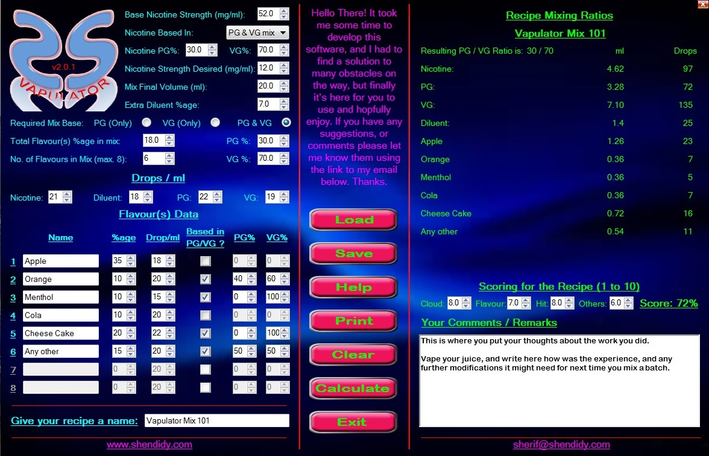
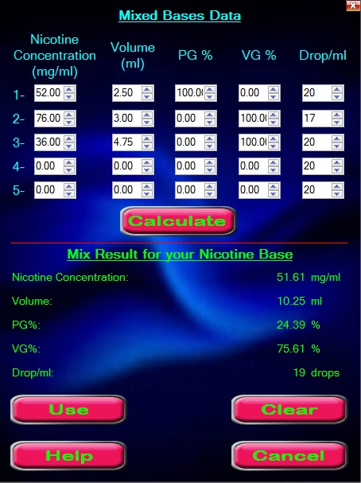
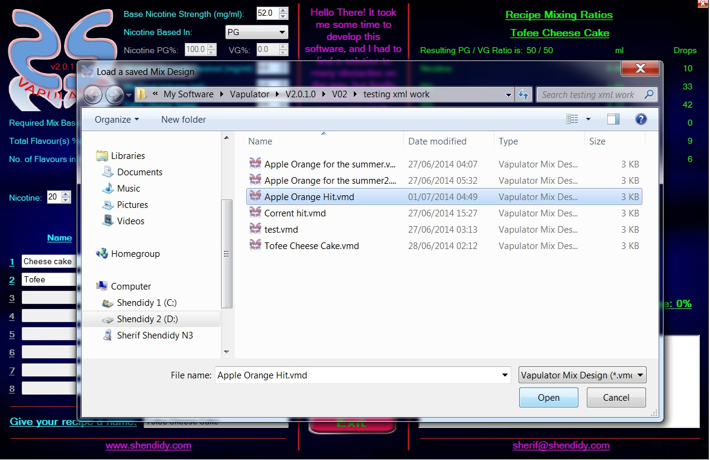
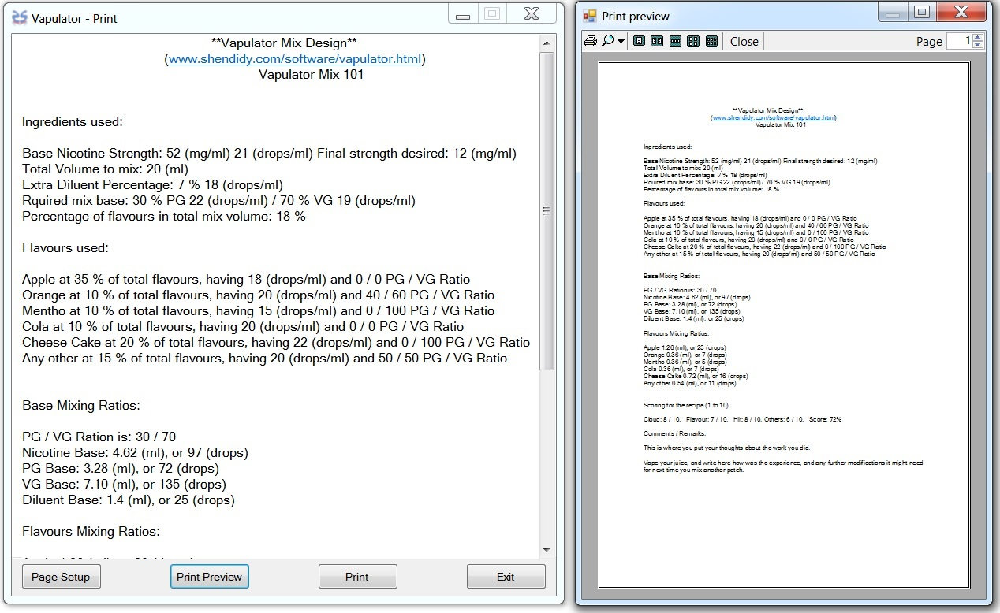
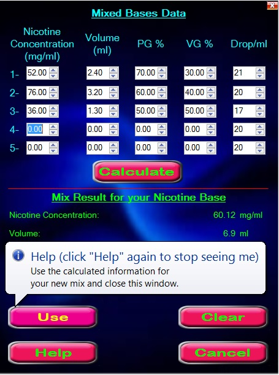

- About |
- Features |
- Download Vapulator |
About:
If you're a vaping geek who enjoys sitting back with your mod and feel the hit of your favourite e-juice mix along with the flavour and massive cloud that sets your mind on journeys to your loved places, then definitely you like to mix your own e-juice. This application is then made for you. It will give you all the help you need calculating the ratios to mix together your recipe's ingredients, and will help you experiment more and more flavours until you find your holy grail.

Features:
• Supports mixes with Nicotine based in PG, VG, or even a mix of different nicotine bases. So if you have few mls of a concentration and you hate to throw it away, now you don't have to. In fact you can mix up as many bases together, and Vapulator will compute the resulting mix concentration, as well as its PG/VG ratio.

• Vapulator supports up to 8 different flavours, each can have their own base, be it PG, VG, a mix of both, or neutral.
• You can specify the drops/ml for each component, and then Vapulator will calculate the mixing proportions in both, ml and drops.
• Give your mix design a name of your choice that reflects your feel about the mix you're working on.
• You can save your designs for future use (in *.vmd format), then you can load them up again, give your work a score based on how the cloud was, the flavour, throat hit and other aspects of the vaping experience you had. Write your comments and remarks and keep it there until you decide to mix another batch, or work on improving it, or even share it with your friends.

• Share your mix designs with your friends who use Vapulator by sending them a copy of the .vmd file, or get their designs and try them out, improve them to suit your taste.
• If you prefer the old style, and like having hard copies, Vapulator gives you the option to print out a detailed report of your mix, with all the ingredients used, their specifications, and the calculated ratios along with your scoring and comments.

• Although the application is very simple to use, regardless of all the tough calculations it has to do in the background, help is only a click of a button away if you got stuck anywhere. And the great thing about the "Help" option in Vapulator, is that it offers it where you need it. In other words, it's right there on any control or field that you don't know how to use, or what it's doing there. Click the "Help" button once, and whenever you hover over any field or control, a bubble style tip will tell you what to do there. Without the need to open a new window, or get away from the work you're doing and distract your thoughts. Another click on the "Help" button, and no more bubbles will show up. That simple, that practical.

• You can open a saved .vmd recipe either by clicking the "Load" button, or double clicking the file you saved with .vmd icon from windows explorer.
• When the application is running and your PC is connected to the internet, you'll receive messages that might interest you. If you have anything you think worth sharing with your fellows of the vaping world, you can send me a message and I'll put it there.
• I designed the user interface to my taste, I wanted it to stand out from the conventional software design. Although the application doesn't have a border, or an "X" button to close down and a "_" to minimize it to the taskbar, There is an "Exit" button to shut it down, as well as a tiny red "X" button at the top right corner. You can move the window around your screen by left clicking and holding the mouse on any free area in the application and moving it around your screen, or double clicking to minimize it to the taskbar.
• If you don't want the application anymore on your machine, simply go to your control panel and uninstall it from there.
• Finally, this application is totally free, no strings attached. I just enjoy developing computer software and do it for my own satisfaction. If you have any suggestions to improve the application, or even if you hate it, I will really be happy to receive an email, and will try to improve it in an updated version.
If you're interested in downloading Vapulator, click the link at the top of this window, save the (.zip) file to your hard drive, unzip it, install Vapulator, and off you go with your DIY vaping liquid design calculator. ENJOY...
Thanks,
Sherif Shendidy